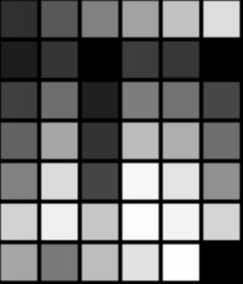

6.3. The Standard KDE IconsKDE provides its own set of original themable icons, as well as possibly one of the best icon engines of its kind. Using these icons makes theming them possible; it allows the user to select a set of icons that all programs use. Using your own icons would make your application appear out-of-place if the user uses nondefault icons. At times, however, it will become absolutely necessary to design your own icons—for example, application icons and special-function toolbar icons. First, a word of note by Torsten Rahn, KDE's lead artist:
You will need several icons for your application. These must be in the PNG (Portable Network Graphics) format. For application icons, you should draw the following icon resolutions and color depths:
For your toolbars, you should use the following types:
Toolbar icons appear in three states: active, disabled, and default. Active is when they are highlighted, with a cursor over them. Disabled is "grayed out," and default is just the standard icon. Be sure that these icons look good in all these states; the icons are generated by the libraries. Note that low color consists of 40 colors in a 6×7 table, with black appearing three times. In the following table, the colors are listed in their hexadecimal equivalents, and the same colors are shown in Figure 6.1:
Figure 6.1. High color should remain consistent with the low-color version, perhaps with a loss of dithering and smoother gradients.  When installing icons, the Makefile will place them according to their name. There's a trick to naming your icons: ColordepthSize-Type-Name.png. Colordepth may be "lo" or "hi." Type may be app, device, action, filesystem, or mimetype. app is an application icon; device is most of those icons you find when you browse the /dev/ directory; action is toolbar and menubar icons (KAction icons); filesystem is for the folder icons and such; and mimetype is the icon for file types. Name, of course, is just a short description of your icon. For example, KEdit's 16×16 low-color icon can be named lo16-app-kedit.png, and the name for a 32×32 pixel icon for a text document that Kedit opens may be lo32-mimetype-textdocument.png. You should use only lowercase in these filenames. |